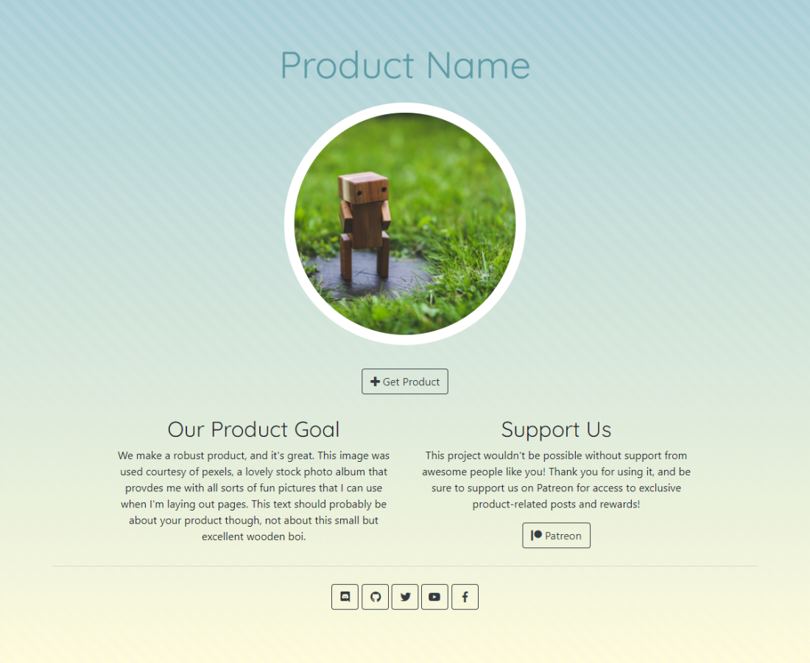

Website Templates
We've got free website templates to help you get something up and running fast, and a guide to help you with your setup! The guide is designed to help provide free or very low cost setup, and goes hand-in-hand with the demo templates provided.
The Portfolio

A simple, single-page site designed to showcase projects as single cards. You can add more rows of projects as necessary, each row featuring up to 3 items.
The Product
A colorful single-page site designed to highlight a specific tool or product. While it's designed for 2 columns only, more can be added to highlight specific features or add other page links.